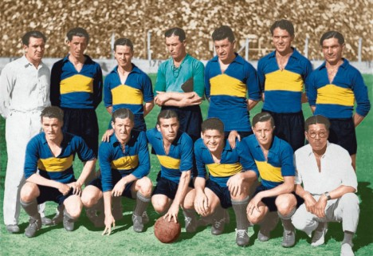

Creacion del campeonato argentino
La Asociación del Fútbol Argentino fue fundada en 1893, es la mas antigua de sudamerica y la octava en el mundo
En 1912 se convirtió también en el primero del continente en afiliarse a la FIFA
La Selección masculina de fútbol de Argentina es uno de los ocho combinados nacionales que obtuvieron la Copa Mundial de Fútbol
habiéndola ganado en Argentina 1978, México 1986 y Catar 2022, además de haber alcanzado el subcampeonato en 1930, 1990 y 2014
Obtuvo también dos medallas olímpicas de oro, en Atenas 2004 y Beijing 2008 y 15 copas America
Era del amateurismo
Esta epoca duro desde 1893 hasta 1934, el deporte comenzo a tener una mayor popularidad y se comenzaron a crear nuevos clubes y comenzo a haber un mayor movimiento del publico rodeando al deporte
Por ello se crearo las llamadas ligas del interior, como lo fueron la rosarina, la cordobesa, la santiagueña, la tucumana, entre otras.
Durante todo este período y los primeros años del profesionalismo, el campeonato de Liga de la Primera División Argentina estuvo siempre integrado exclusivamente por clubes de la ciudad de Buenos Aires, el conurbano bonaerense y la ciudad de La Plata.
Esto se daba porque los equipos del interior del país no estaban afiliados de manera directa a las antecesores de la AFA. En general los futbolistas y una minoría de dirigentes sostenían la necesidad de organizar una liga de fútbol profesional, pero la mayoría de los clubes y sus autoridades se oponían, con la evidente intención de retener la totalidad de las ganancias obtenidas en los espectáculos.
Este y otros conflictos, derivados del manejo de esas ganancias, y disputas de poder con trasfondo en la política, llevaron, en tres oportunidades, a la creación de ligas paralelas.El mal desempeño del seleccionado en el Mundial de 1934, al que se concurrió con jugadores de segundo orden, dado que los mejores disputaban los torneos organizados por las ligas disidentes, sumado a la poca convocatoria que tenían los torneos que organizaba la asociación,
provocó que el 3 de noviembre de 1934 se fusionaran ambas entidades, dando forma definitiva a la AFA.
Y asi se genero el fin de la era del amateurismo y se dio inicio a la era del profesionalismo.
Uno de los clubes mas destacado del amateurismo fue el club alumni que se disolvio en el año 1911, coronandose 10 veces campeones.
Era profesional

De a poco se comenzo a incluir mas a alos equipos que no pertenecian al area metropolitana,
Se creo una liga con sus respectivas categorias, las cuales incluian ascensos y descensos. El deporte siguio creciendo a traves del tiempo y la liga fue cambiando de formato y actualizandose.
Se crearon copas nacionales y los equipos comenzaron a competir internacionalmente, el primer equipo en conseguir unos de estos titulos fue Independiente, consagrnadose campeon de la copa libertadores por primera vez en 1964
Asi el futbol artgentino se comenzo a forjar una historia y un nombre en el continente americano y en el mundo.
Obviamente fue mutando y cambiando a partir de los años, se crearon y se desafectaron copas y campeonatos nacionales, pero simpre se mantuvo en actividad.
Hoy en dia la Argentina cuenta con el campeonato argentino, la copa de la liga, la copa argentina y la supercopa argentina, como titulos de mayor renombre a nivel nacional.